Facelift & skin tightening
DV™ SynergyLift lifts the face at every level, from the deep support layer to the surface, without surgery.
See the treatment
Doctor-led skin and aesthetic care, trusted by patients across Malaysia since 2006. Every treatment begins with an honest clinical consultation, not a sales pitch.
Scroll to discover
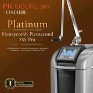
PicoSurePicoSure Pro Platinum 755 nm picosecond laserCellboosterSuisselle Cellbooster skin boosterDensityJeisys Density RF skin tighteningOligio XOligio X radiofrequency, now at Da Vinci ClinicUltraClearUltraClear cold fibre laser, safe for all skin typesDeusadermDeusaderm Lido injectable collagen gelMounjaroMounjaro weight-loss injection, now available at Da Vinci ClinicMalaysia’s doctor-led aesthetic clinic since 2006, with four clinics across Kuala Lumpur. Every plan starts with an honest consultation and results that still look like you.
Treatments are chosen so you can return to your day. Our No Downtime approach combines efficiency with care.
Each step of your journey, from consultation to treatment, is personalised to your needs for a comforting, individual experience.
Treatments backed by technology and expertise, geared toward effective, visible results that enhance your health and lifestyle.
The first clinic in Malaysia to own PicoSure Pro, and an authentic Ultherapy Prime and Thermage provider.
Every journey starts with an honest medical consultation. Pricing is discussed openly based on your needs.
Our doctors hold the Ministry of Health’s LCP credential and train other doctors across the Asia-Pacific region.
A doctor assesses your skin and listens to what you want to improve. No sales consultant, no pressure, no upselling.
How it worksTouch a point on the portrait to see which treatment family it belongs to.
DV™ SynergyLift lifts the face at every level, from the deep support layer to the surface, without surgery.
See the treatmentThe concerns people associate with plastic surgery, double eyelids, eyebag correction, face lifting, rhinoplasty and gynaecomastia, treated with sutures, energy devices and injectables that work with the structure you already have.
See the treatmentDV™ PigmentAway clears melasma, sun spots, freckles and tattoos with picosecond lasers that shatter pigment mechanically rather than with heat.
See the treatmentDermal fillers are hyaluronic acid gels that restore facial volume, soften smile lines and contour the chin and jawline without surgery.
See the treatmentSkin boosters improve hydration, texture, elasticity and overall skin quality without adding volume.
See the treatmentBiostimulators restore volume now and keep improving for months as your own collagen rebuilds.
See the treatmentDV™ Hair is a non-surgical hair restoration protocol: laser and microneedling to stimulate the scalp, regenerative injectables to feed the follicle, light therapy and prescribed medication to hold the result.
See the treatmentSkin analysis and a treatment plan matched to your concern, skin type and lifestyle, with pricing explained before anything starts.
Our treatmentsEach signature treatment combines several technologies in a fixed sequence, adjusted to your skin after assessment.
Non-surgical facelift in one to two sessions: Ultherapy Prime, HIFU or thread lifting for the deep layer, Oligio X, BTL Exion or Density for skin tightening, then collagen biostimulators and post-treatment serum.

Four to five monthly sessions with the world’s first 755 nm picosecond laser (PicoSure Pro), PicoWay and Fotona StarWalker PQX, supported by Plinest polynucleotides, exosomes and daily skincare.

AdvaTX yellow laser and pico lasers for tone, medical facials for texture, then skin boosters from Profhilo to Rejuran and Plinest for hydration. Four to five sessions, one month apart.

Fat freezing with Cryofreeze Clatuu Alpha, Fotona StarFormer muscle toning, EndyMed Pure skin tightening and, where appropriate, doctor-supervised weight-loss medication. At least four to five monthly sessions.

Fotona HAIRestart and microneedling to stimulate the scalp, polynucleotide and exosome injectables, PDT light therapy and prescribed medications. Three to five sessions depending on treatment.

From the eyes to the jawline, each area of the face has its own treatment family.
All treatmentsThe concerns people associate with plastic surgery, double eyelids, eyebag correction, face lifting, rhinoplasty and gynaecomastia, treated with sutures, energy devices and injectables that work with the structure you already have.
See the treatmentSkin boosters improve hydration, texture, elasticity and overall skin quality without adding volume.
See the treatmentDermal fillers are hyaluronic acid gels that restore facial volume, soften smile lines and contour the chin and jawline without surgery.
See the treatmentDV™ SynergyLift lifts the face at every level, from the deep support layer to the surface, without surgery.
See the treatmentDrag the handle to compare before and after. These are Da Vinci patients, photographed by the clinic.
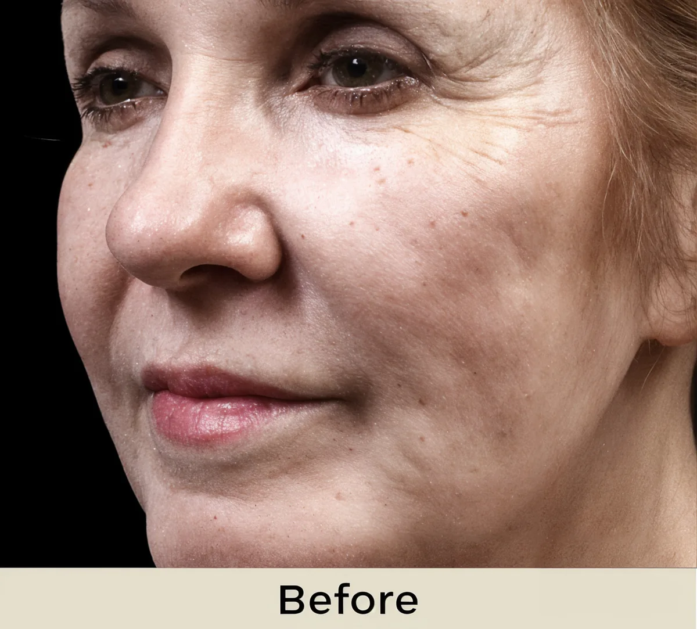
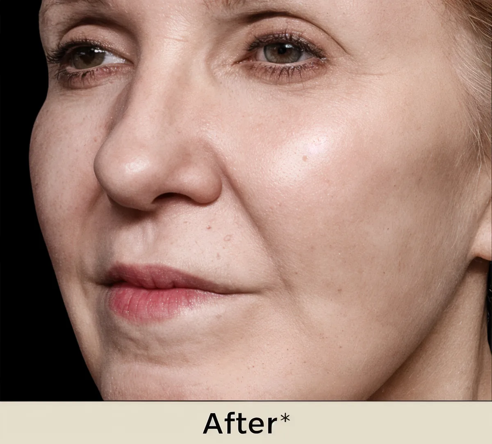
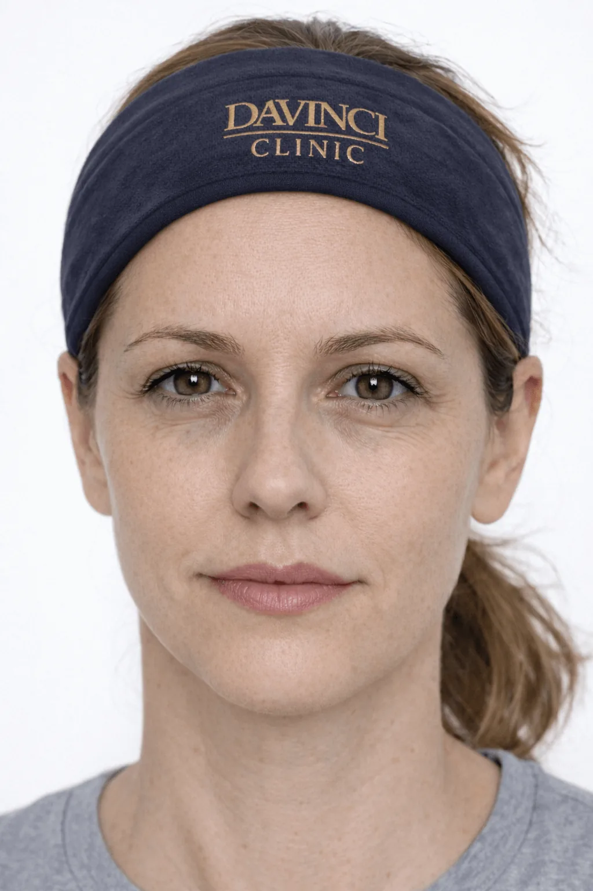
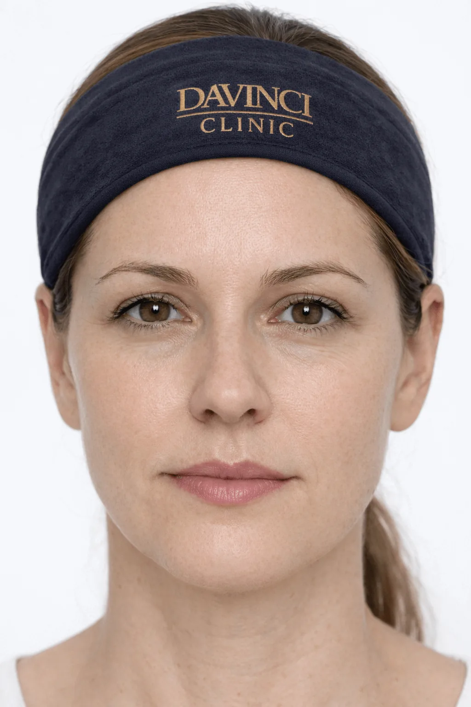
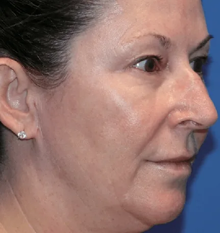
BTL Exion skin tightening, before and after (client photo).
About this treatmentCollaju under-eye programme, before and after four weeks (client photo).
About this treatmentIndividual results vary. Photos are provided by Da Vinci Clinic.
Recognition from Merz, Cynosure, Fotona and Mastelli, the companies behind the devices and injectables, and from the Malaysia Book of Records.
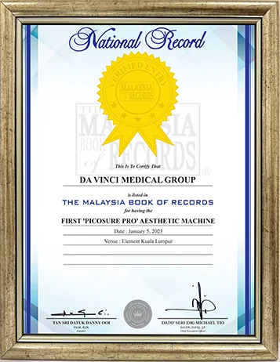
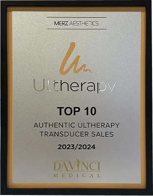
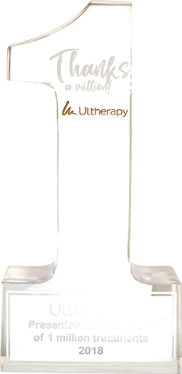
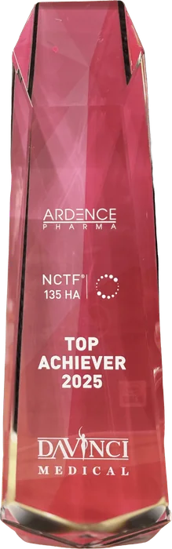
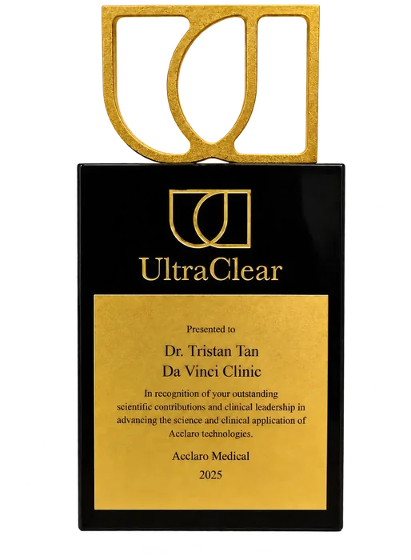
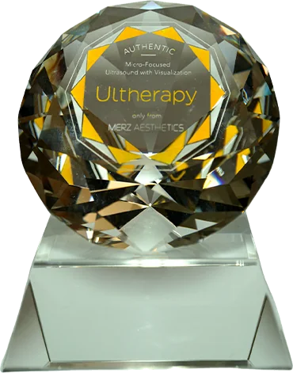
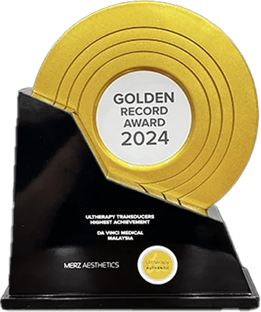
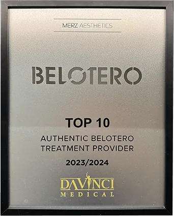
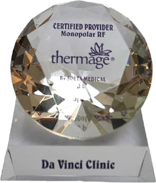
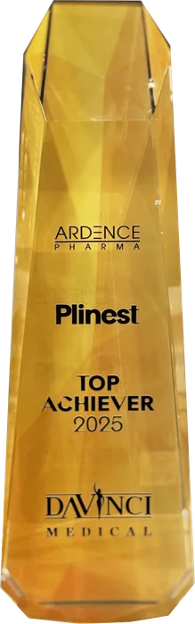
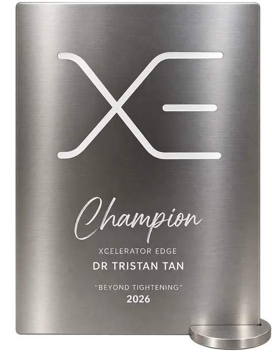
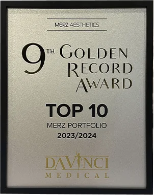
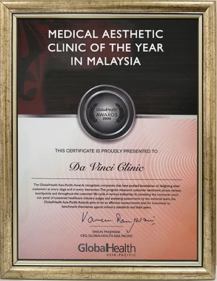
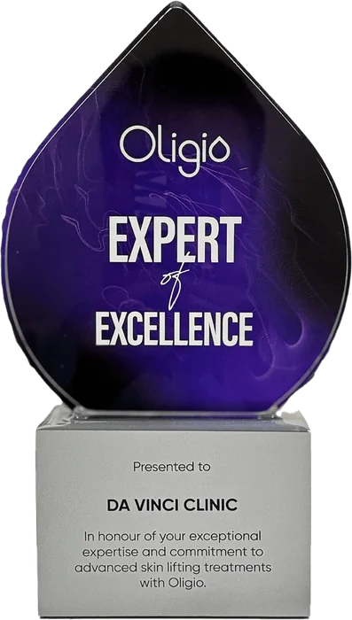
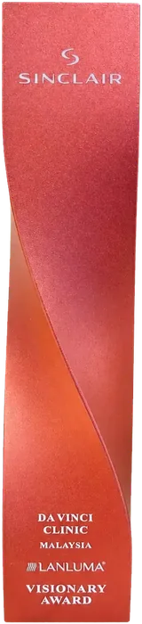
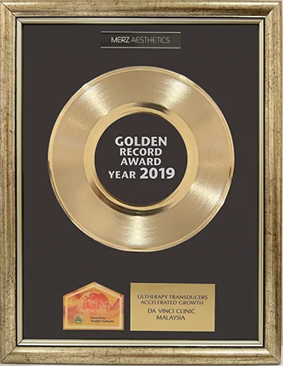
LCP-certified aesthetic physicians who assess first and recommend second, across four clinics in Kuala Lumpur.
Meet the team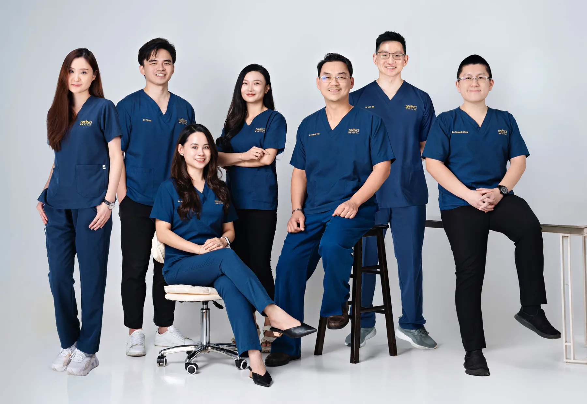
Seven LCP-certified doctors across four clinics.

Director & Founder

Clinical Director, Bukit Jalil

LCP-Certified Doctor, Cheras

LCP-Certified Doctor, Bukit Jalil

Lead Doctor, TRX

LCP-Certified Doctor

Aesthetic Doctor, Mid Valley
★★★★★
Candy Law · Google review, Mid Valley“I love Da Vinci clinic. Beside the friendly environment, the most important is they have many different types of pico laser with FDA approved. So far price is good. Dr very experienced!”
faiz C · Google review, Mid Valley“Dr Tan listens to his patients and recommends what’s best for them, and the staff are all very friendly. Thank you!”
Janet Quah · Google review, Mid Valley“I have done 3 procedures at Da Vinci over the last few years and I’m very happy with the results. The doctors are very professional, highly skilled, caring and very people-oriented.”
Joyce Chong · Google review, Mid Valley“Dr. Tan took the time to address all of my concerns and answer my questions, making me feel confident in the treatment. The level of care and expertise surpassed my expectations.”
Seven LCP-certified doctors, the same standard at every clinic, since 2006. Recognised by Merz, Cynosure, Fotona and the Malaysia Book of Records.
Find your clinicEvery plan starts with a doctor, at any of our four Kuala Lumpur clinics.
Book a consultationChoose your nearest branch and book directly on WhatsApp.
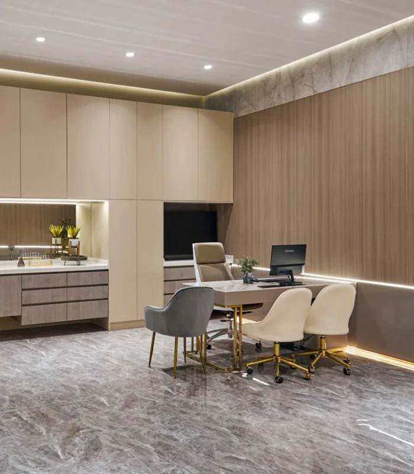
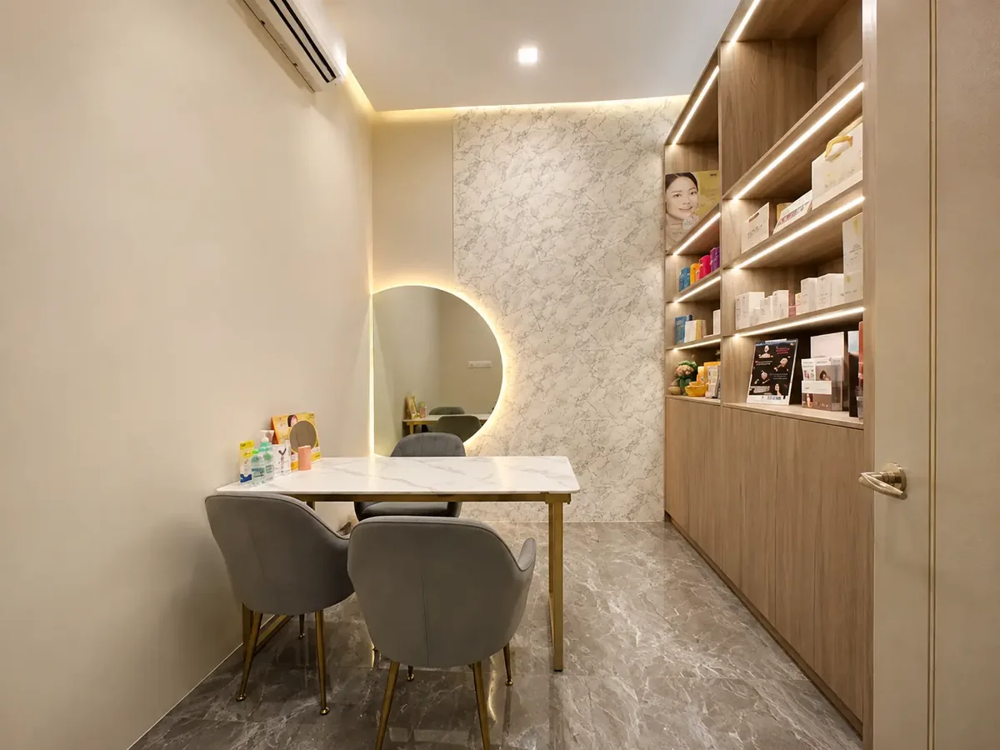
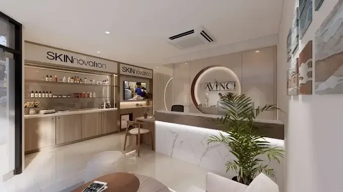
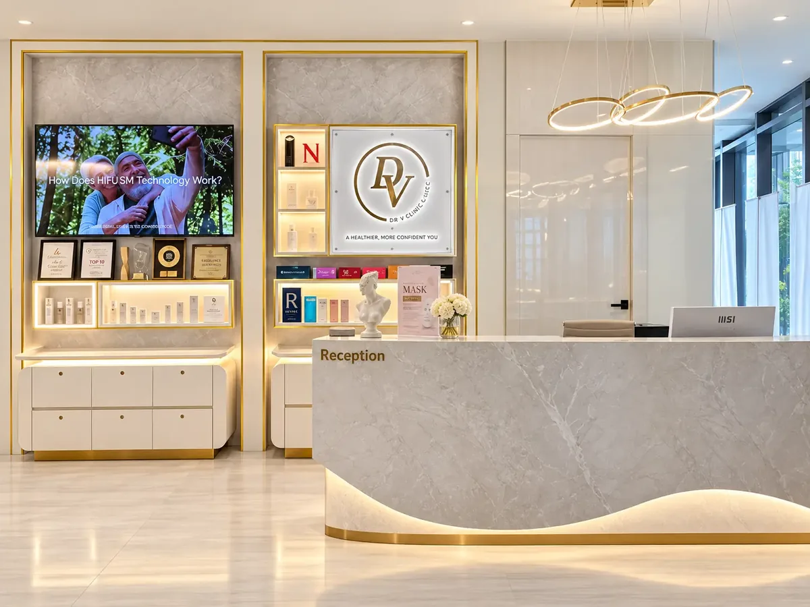
Common questions about booking and visiting Da Vinci Clinic.
Four clinics in Kuala Lumpur: Mid Valley (The Boulevard Offices), Bukit Jalil (DV Prestige, Bukit Jalil Signatures), Cheras (Taman Connaught) and TRX (Menara Exchange 106). Addresses, phone numbers and WhatsApp links are in the footer.
Monday to Friday 10:00am to 7:00pm, Saturday and Sunday 10:00am to 5:30pm, at every branch.
No. Your first visit is a clinical assessment by a doctor, not a sales consultant. Options and pricing are laid out clearly and you decide.
Our aesthetic physicians hold the Letter of Credentialing and Privileging (LCP) from the Ministry of Health Malaysia, the standard for aesthetic practitioners, and several train other doctors for Merz, Fotona, Neauvia and Plinest.
Yes. Energy devices are FDA-cleared and every injectable is sourced from its original maker. Da Vinci was the first clinic in Malaysia to own PicoSure Pro, recorded by the Malaysia Book of Records.
WhatsApp the branch closest to you, call, or use the form on the contact page. Walk-in consultations depend on doctor availability, so booking ahead is best.

Both lift and tighten without surgery. One uses dual-frequency radiofrequency, the other micro-focused ultrasound with real-time imaging. Here is how our doctors decide.

Why treating active acne and fresh scars early tends to mean fewer sessions later.

The same regenerative idea, two very different treatment plans.

Every treatment begins with an honest clinical consultation at any of our four Kuala Lumpur clinics. No pressure, no upselling.
Book a consultation